| argument name | description | example in | example out after 1st iteration
|
| debumpify |
Looks for U-shaped traces (with 90 degree corners) that can be shortened
or eliminated.
|  | 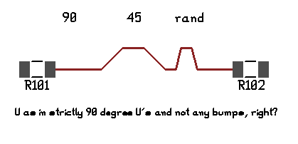
|
| miter |
Replaces 90 degree corners with a pair of 45 degree corners, to reduce
RF losses and trace length.
| 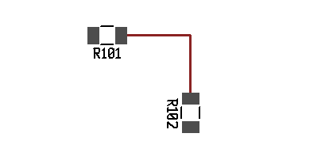 | 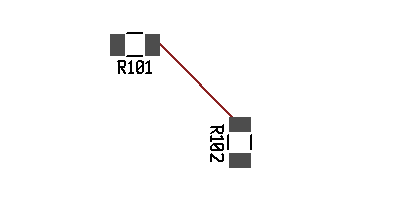
|
| orthopull |
Looks for chains of traces all going in one direction, with more
traces orthogonal on one side than on the other. Moves the chain in
that direction, causing a net reduction in trace length, possibly
eliminating traces and/or corners.
| 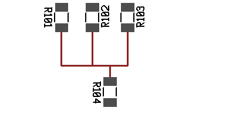 | 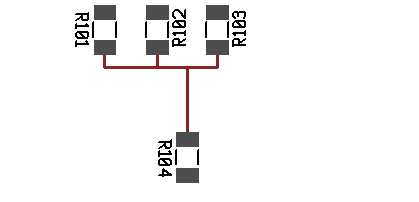
|
| unjaggy |
Looks for corners which could be flipped to eliminate one or more
corners (i.e. jaggy lines become simpler).
| 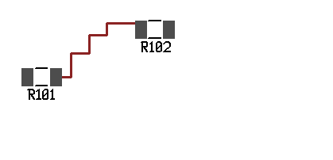 | 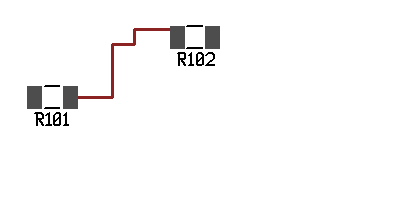
|
| vianudge |
Looks for vias where all traces leave in the same direction. Tries to
move via in that direction to eliminate one of the traces (and thus a
corner).
| 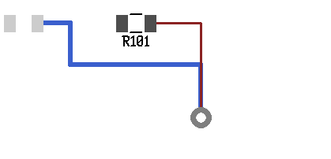 | 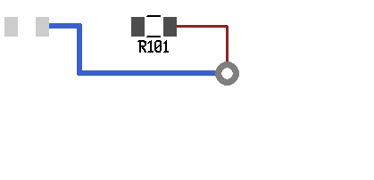
|
| viatrim |
Looks for traces that go from via to via, where moving that trace to a
different layer eliminates one or both vias.
| 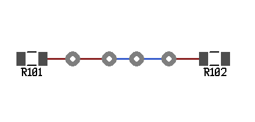 | 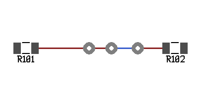
|
| auto | run all the above except miter; run them multiple times until there's no more change possible | |
|